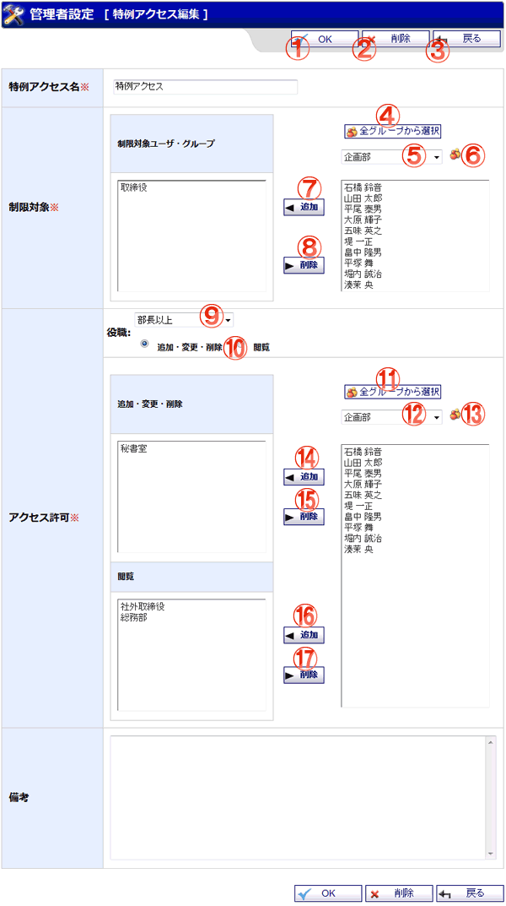

スケジュールの特例アクセス編集画面です。

機能説明
OKボタン特例アクセス登録確認画面へ遷移します。 |
削除ボタン削除確認画面へ遷移します。 |
|---|---|
戻るボタン遷移元の画面に遷移します。 |
全グループから選択ボタンポップアップで全グループから選択画面が開きます。 |
グループコンボ選択したグループに所属するユーザが制限対象のユーザリストに表示されます（既にメンバーに追加されているユーザは表示されません）。 |
グループボタンポップアップでグループ選択画面が開きます。
グループ選択画面でグループをクリックすると、 |
追加ボタン制限対象のユーザリストで選択されているユーザやグループを、制限対象のユーザ・グループに追加します。 |
削除ボタン制限対象のユーザ・グループで選択されているユーザやグループを、制限対象のユーザ・グループから除外します。 |
役職コンボアクセス許可に設定する役職を選択します。 |
権限区分選択役職コンボで役職選択時に開きます。 |
全グループから選択ボタンポップアップで全グループから選択画面が開きます。 |
グループコンボ選択したグループに所属するユーザがアクセス許可のユーザリストに表示されます（既にメンバーに追加されているユーザは表示されません）。 |
グループボタンポップアップでグループ選択画面が開きます。
グループ選択画面でグループをクリックすると、 |
追加ボタンアクセス許可のユーザリストで選択されているユーザやグループを、アクセス許可のユーザ・グループに追加します。 |
削除ボタンアクセス許可のユーザ・グループで選択されているユーザやグループを、アクセス許可のユーザ・グループから除外します。 |
追加ボタンアクセス許可のユーザリストで選択されているユーザやグループを、閲覧許可のユーザ・グループに追加します。 |
削除ボタンアクセス許可のユーザ・グループで選択されているユーザやグループを、閲覧許可のユーザ・グループから除外します。 |
表示・入力項目説明
特例アクセス名
特例アクセス名を入力します。
制限対象
アクセス制限の対象になるユーザ・グループを設定します。
アクセス許可
制限対象に対してアクセスが許可される役職・ユーザ・グループを設定します。
備考
備考を入力します。